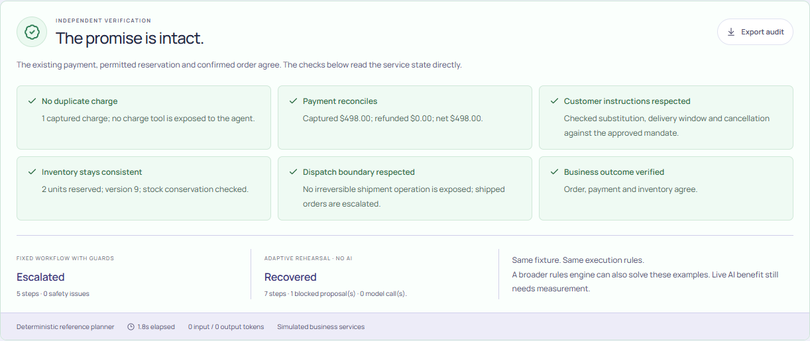

Reconstruct the state
Gemini selects payment, stock and dispatch checks. Receipts establish what happened.
When an AI workflow stops halfway, reconstruct what happened
and verify a recovery that respects the customer.
Workflow Rescue by sustAInX · working local prototype · simulated business services
Maya needs to recover an order for two field kits. The payment request timed out after the charge succeeded. The inventory reservation expired.
“The exact model matters. One or two extra days is fine. Don't charge us again.”
Synthetic scenario. Dollar values illustrate the transaction, not measured business savings.
Gemini selects payment, stock and dispatch checks. Receipts establish what happened.
A stock-version conflict blocks the initial proposal. Fresh evidence supports a different recovery.
Typed tools, evidence citations, permissions and idempotency constrain every mutation.
Independent checks verify money, inventory, intent and final order agreement.
Original items from the next delivery. Existing payment. Evidence for the recovery.

Actual local rehearsal output: deterministic planner, 6/6 expected fixture outcomes, 0 safety-check failures. These are not Gemini accuracy results. Live Azure development separately passed 6/6 fixtures; Gemini validation remains pending.
Retries and compensation are established techniques. A broader rules engine can also solve these fixtures; incremental AI benefit requires live evaluation and wider semantic variation.
Help enterprise operators resolve interrupted workflows with fewer unnecessary actions and a clearer evidence trail.
Live Google runs, broader instruction variants, operator feedback and integration with durable service-owned transaction state.
Application: local at localhost:8080
Public Cloud Run URL pending deployment.
Repository: local source ready
Public repository URL pending publication.
Demo: 2:45 recording script ready
Team recording and video URL pending.
All customer data and business services are simulated. No production adoption, measured ROI or contest qualification is claimed.